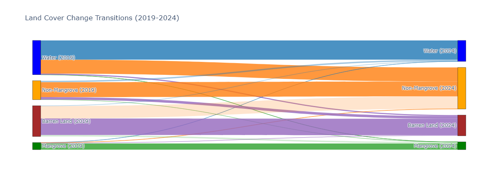

Project Abstract
Monitoring land cover changes, particularly in sensitive coastal ecosystems, is essential for sustainable management and conservation efforts. This study investigates land cover transitions in Ambanja Bay, Madagascar, using a multi-sensor classification approach that integrates Sentinel-1 Synthetic Aperture Radar (SAR) and Sentinel-2 optical imagery. Sentinel-1 backscatter data (VV, VH, VV/VH ratio, and Radar Vegetation Index (RVI)) were combined with Sentinel-2-derived Normalized Difference Vegetation Index (NDVI) to improve classification accuracy. A Random Forest classifier was applied to both a SAR-only dataset and a SAR-optical fused dataset, with accuracy assessments conducted using a confusion matrix and overall accuracy metrics. Results indicate that the SAR-only classification achieved an overall accuracy of 60%, with notable misclassifications among vegetation classes. In contrast, the fusion-based classification significantly improved performance, achieving 94% accuracy, demonstrating the advantages of integrating spectral and structural data for land cover mapping. Additionally, a Sankey diagram was employed to visualize land cover transitions between 2019 and 2024, revealing changes in mangrove extent, vegetation shifts, and land conversion patterns. These findings underscore the value of multi-sensor data fusion in remote sensing applications, particularly for monitoring dynamic coastal ecosystems. The study provides a robust framework for land cover classification, contributing to improved resource management and conservation planning.
Project Results
Land Cover Map

Figure 1: Classified land cover maps of Ambanja Bay, Madagascar, for 2019 and 2024. The maps illustrate land cover transitions, including mangrove changes and vegetation shifts.
Land Cover Change (Sankey Diagram)
Figure 2: Sankey diagram visualizing land cover transitions between 2019 and 2024, highlighting the extent of mangrove conservation, vegetation loss, and land conversion patterns.